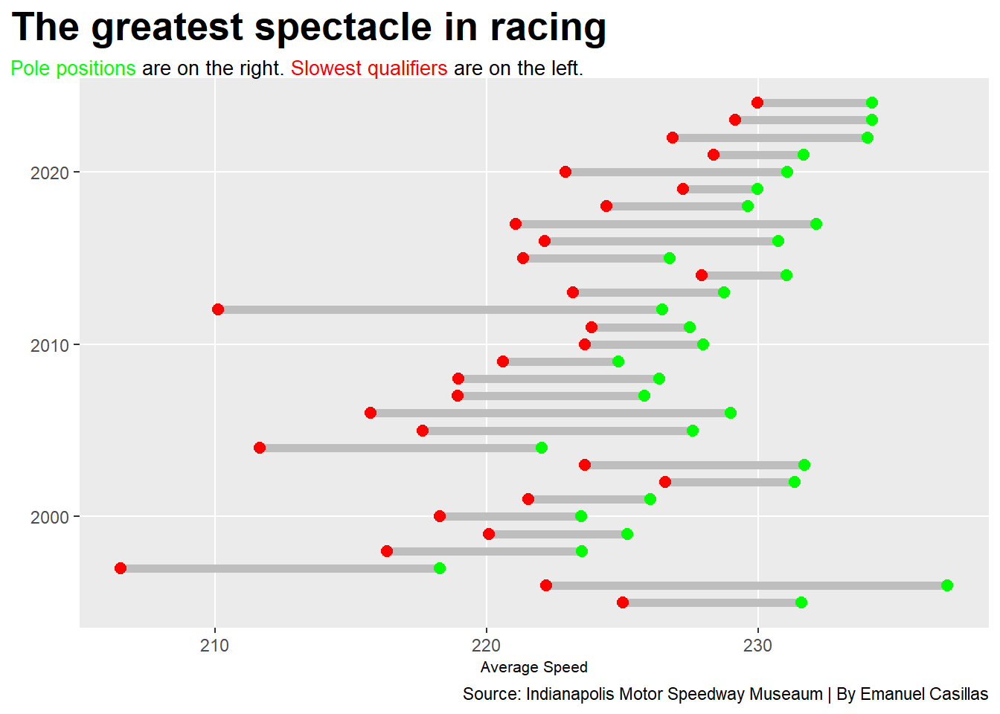
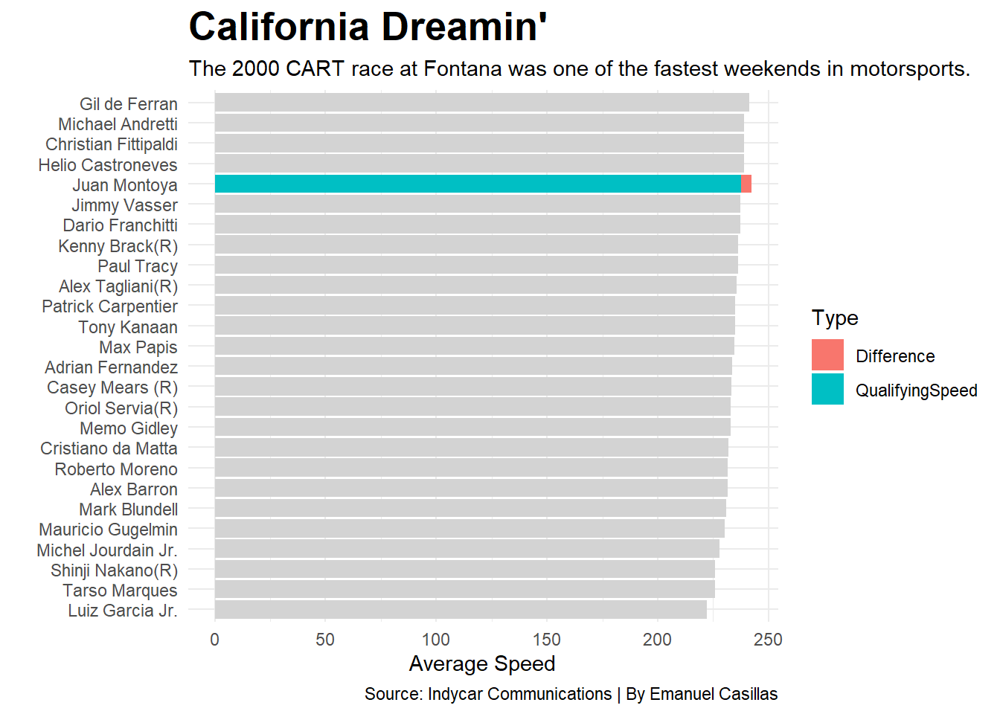

IndyCar racing is old, American open-wheel racing has existed since at least 1906, that is about 45 years before Nascar and Formula one existed. The term ‘IndyCar’ was coined in 1911 when Ray Haroun won the first Indianapolis 500, so there’s tons of history in American open-wheel racing. Their marquee event is the second-most attended annual gathering of humans, and some of the most talented drivers in history have made a name in their names racing Indycars. The series has a combination of oval tracks, road courses, and street tracks. There is lots to like about the series. It would be easy to assume that Indy racing is one of the most popular racing series in the world, but it’s not, in the United States it is behind both Nascar and Formula one in terms of popularity. The reason for this is a twelve year civil war that fractured American open-wheel racing and is the most important event in motorsports history. A domino effect starting with Formula one legend Jim Clark winning the Indianapolis 500 in 1966 led to the first split, where the United States Auto Club (USAC) relinquished control of the series to the Championship Auto Racing Teams (CART), a board of team owners with the exception of the Indianapolis 500. The feud started back up again in the early 90s where Indianapolis Motor Speedway president Tony George wanted track owners to have a greater say in how the series is run, and in the ensuing feud started his own series to rival CART, the Indy Racing League (IRL). American open-wheel racing remained fractured for 12 years, and the 2008 reunification season was hampered by the economic recession. Recovery has been slow ever since, and the story of the IndyCar split can be told through the speed of the cars themselves. The IRL branded themselves as the down home simple series where the schedule was all ovals and the drivers earned their seat by rising through the ranks of midget cars, sprint cars to IndyCars. CART had the more famous drivers who oftentimes were siphoned from the European ladder to Formula one, there were fast cars, and big money sponsors.
Looking at the so-called greatest spectacle in racing, the speeds climbed heavily through the CART days, and through the first split year were reaching new highs. In 1996 Arie Luyendyk set a four lap average of 236.986 mph which remains a record to its day, and a single lap average of 237.498 mph. Luyendyk sat on pole for the 1997 Indy500 also, but along with day’s long rain showers affecting condition, the new IRL engine and chassis brought the pole speed down to 218.263 mph.
In the ensuing years the 10 mile average for Indy500 qualifying steadily rose, but never reached the heights of the pre-split days. Pole speed at the 500 only started regularly breaking 230 mph averages around 2014, and the pole record was broken in 2024 by Scott McLaughlin at 234.220 mph.
Code
library(tidyverse)library(ggalt)library(ggtext)library(gt)IndyPoles <-read_csv("Indy 500 pole data.csv")ggplot() +geom_dumbbell(data=IndyPoles, aes(y=Year, x=SlowestSpeed, xend=FastestSpeed),size =2,colour ="grey",colour_x ="red",colour_xend ="green")+labs(x="Average Speed",y="",title="The greatest spectacle in racing ", subtitle ="<span style = 'color:green;'>Pole positions</span> are on the right. <span style = 'color:red;'>Slowest qualifiers</span> are on the left." ) +theme(plot.subtitle =element_textbox_simple() )

On the other hand, CART’s approach to the split was to reach new heights, the turbocharged engines and higher downforce allowed for greater speed, one of their great showcases of speed was the 2000 Marlboro 500 at the California speedway. The two-mile high banked oval allowed for insane average finishes, including pole-winner Gil de Ferran driving for Team Penske breaking the closed course speed record with an average speed of 241.___ mph, and unofficially, Chip Ganassi Racing Driver Juan Pablo Montoya went even faster at 242.___ during practice. Although speed peaked at California, the similarly configured Michigan International speedway saw similar speeds with Paul Tracy setting the pole speed at 234.___ mph.
Code
fontana <-read_csv("Fontana speed.csv")jpm <- fontana |>filter( Driver =="Juan Montoya" ) |>mutate(Difference = PracticeSpeed - QualifyingSpeed ) |>select(Driver, QualifyingSpeed, Difference) |>pivot_longer(cols=c(-Driver), names_to="Type", values_to="Speed")ggplot() +geom_bar(data = fontana, aes(x=reorder(Driver, QualifyingSpeed), weight=QualifyingSpeed),fill="lightgrey") +geom_bar(data= jpm, aes(x=Driver, weight=Speed, fill=Type)) +coord_flip()+labs(x="", y="Average Speed", title="California Dreamin'", subtitle="The 2000 CART race at Fontana was one of the fastest weekends in motorsports.", caption="Source: Indycar Communications | By Emanuel Casillas" ) +theme_minimal()+theme(plot.title =element_text(size =20, face ="bold") )

The arms race in CART culminated at the Texas motor speedway (TMS), although the track was shorter and not as steeply banked as California or Michigan, the increasing downforce and power allowed the cars to reach nearly the same speeds around turns of a significantly smaller radius.
The trouble started long before the race itself, CART board advisor Wally Dallenbach visited the track while it was under construction and deemed the track unfit for CART. CART and TMS did not sign the contract to race at the track until August of 2000 leaving little time for negotiation and changes. Eddie Gossage, president of TMS reluctantly had changes made to the track at CART’s request and made his wishes known that CART hold a test at the track prior to racing there for safety and marketing reasons.
Gossage also stated that for a race to be held at the track in a safe manner, CART should slow their cars down to the speeds their IRL counterparts were racing at which was the 225 mph average range. No such test ever happened, only two private tests were held, Team Rahal driver Kenny Brack did a day of testing in December, and CART driver union president Marucio Gugelmin and his team PacWest racing did their own test in February, both days were unable to simulate race day conditions due to factors like temperature and wind.
Once race day was closer, the concerns that were once in the background came to the forefront as speed grew, drivers were setting average lap speeds well above 230 mph, Max Papis stated that he was going so fast that when his tim told him to pit he didn’t because he couldn’t differentiate the front stretch and back stretch. Several more drivers reported dizziness and nausea, spotters said that merely watching the cars was dizzying.
CART and TMS realized something had to be done and multiple solutions were proposed, as much downforce and horsepower had been trimmed from the cars as possible. Talk of using the infield road course and adding a set of cones to the back straightaway were entertained as ways of slowing the cars down, but ultimately the race was canceled, the only race in CART history to be canceled without postponement.
Eventually CART moved away from the large ovals, and the board filed for bankruptcy two years later rebranding as the Champ Car World Series, which filed for bankruptcy itself after the 2007 season, it’s assets were bought by the IRL which had since rebranded to the IndyCar series and the two became whole in 2008, although th remnants of the IndyCar civil war remain ever present.